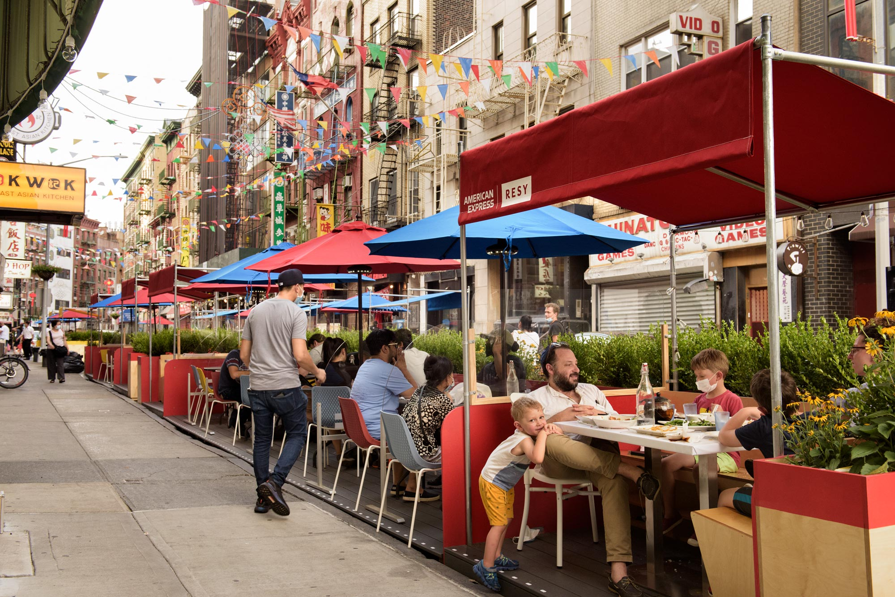

In April of 2020, The Open Streets program was started during the peak of the coronavirus pandemic, to
give adults, kids, and pets more space to enjoy the outdoors instead of being cramped in their apartments.
Restaurants have been able to apply online to have outdoor dining on these streets.
After about a year, NYC Council voted to make the Open Streets program permanent.
So where are these Open Streets?
What kind of cuicines can you enjoy?
Keep exploring to find out!

The data used for the visuals below come from NYC Open Data.